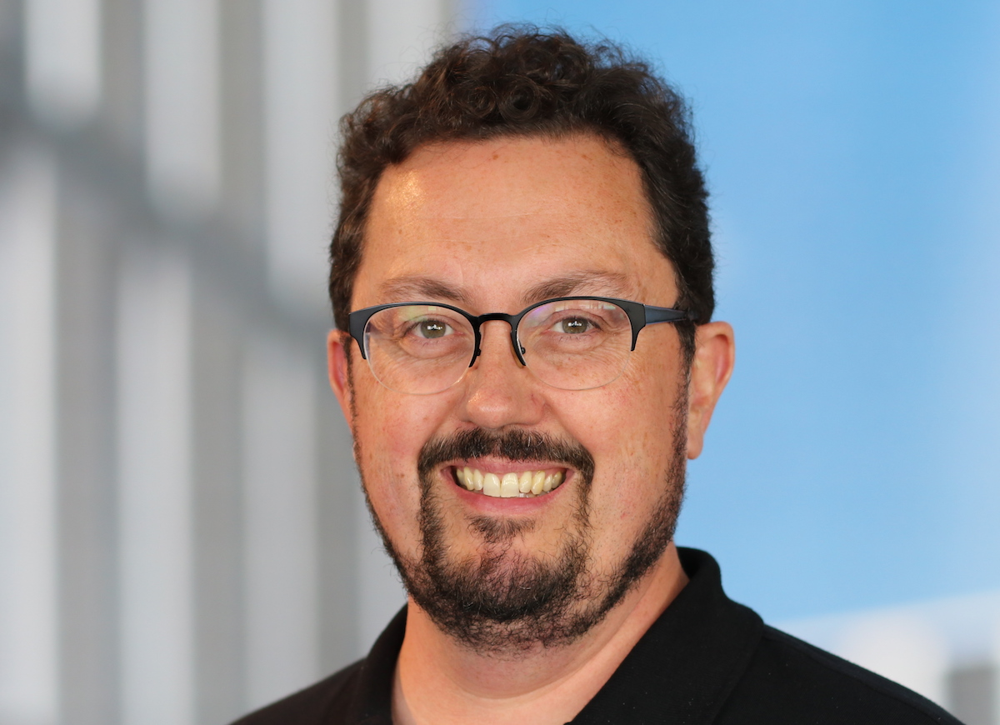
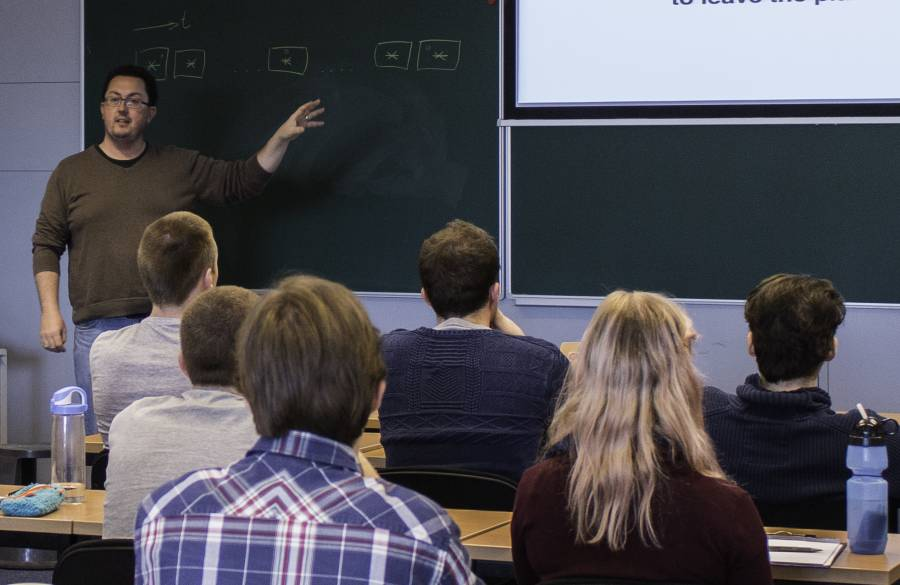

Matthew Kenworthy
Matthew Kenworthy in 2019. Associate Professor at Leiden Observatory
My research covers the search and characterisation of extrasolar planets by direct imaging, and developing optical instrumentation to help find them. In the past few years I have been searching for circumplanetary disks and rings by looking for the shadows they cast as they pass between us and their parent stars.
If you're after a paper I am an author on, you can find it on my publications page. Here is my Curriculum Vitae (August 2020) along with a short biography and photos.
Contact
In order of responsiveness:
- Email: kenworthy@strw.leidenuniv.nl
- Phone: +31 (0) 71 527 8455
- Leiden Observatory, Leiden University, P.O. Box 9513, 2300 RA Leiden, The Netherlands
I tweet about astronomy and my work regularly, I put computer code produced by my group on GitHub, and I have an ORCID iDYes, that's the correct capitalization..
ADS page of all academic publications and ADS search of refereed publications.
Directly imaged exoplanet around TYC 8998
We discovered a 14 Jupiter mass companion to the solar mass star TYC 8998, sitting about 230au away from its parent star. Alex Bohn's paper shows the companion moving through space with the star, and its thermal emission is consistent with computer models.
Beta Pictoris
A transiting exocomet detected in broadband light by TESS in the Beta Pictoris system (2019) A&A 625, L13. We model a dip in the light curve seen towards the young star Beta Pictoris as being caused by a cometary tail, confirming a 20 year old prediction.

The bRing Project
Looking at one star continuously for over one year
In 2017 and the start of 2018, the circumplanetary environment of the gast giant exoplanet Beta Pictoris b crossed in front of the bright young star Beta Pictoris, a naked eye 4th magnitude star in the Southern skies. We wanted to see if any circumplanetary material crossed in front of the star over this event lasting 300 days, and so I led the bRing project.
The
Teaching
Matthew Kenworthy teaching in 2015.I enjoy teaching, especially when I can break down a difficult topic into simpler parts and explain how it all fits back together as a whole. Relating abstract concepts to more everyday experiences means that I typically use props to convey concepts, such as tone generators to demonstrate heterodyne radio receivers, and wooden marble games to explain how digital cameras work.
My teaching led to a student nomination for a Faculty Award for Education in the Science Faculty in Leiden in 2014.
- Astronomical Telescopes and Instruments in 2016
- Making Better Figures in 2016
- High Contrast Imaging in 2017 and 2015
- Optics and Instruments in 2015
- Astronomical Telescopes and Instruments in 2014
- Modern Onderzoek in 2013, 2012 and 2011
- Detection of Light in 2014, 2012 and 2011
- NOVA Fall School on Exoplanets in 2013
- ACAO Summer School in December 2012
Talks and Outreach
 Matthew Kenworthy talking at Pint of Science in Utrecht, May 2019 Photo by Raquel Ledo.I enjoy giving talks about astronomy to all age groups, and if you're interested in me giving a talk to your school, astronomy club or an outreach event such as Astronomy on Tap or Pint of Science, please contact me!
Matthew Kenworthy talking at Pint of Science in Utrecht, May 2019 Photo by Raquel Ledo.I enjoy giving talks about astronomy to all age groups, and if you're interested in me giving a talk to your school, astronomy club or an outreach event such as Astronomy on Tap or Pint of Science, please contact me!
My talk schedule for 2019 is as follows:
- Pint of Science in Utrecht, 20 May 2019
- Astronomy on Tap, Edinburgh, 11 June 2019
- Space Late, National Space Centre, Leicester, 05 October 2019
Previous years have included notable talks at the inaugural Astronomy on Tap in Leiden (March 2017), Science Cafe Wageningen (Oct 2017), Cuba City Elementary, Middle and High Schools (in 2013, 2016 and finally six grades and the Lego Robot Club in 2018), and several other schools in Britain and the US. Two talks at the Ewell Astronomical Society, which I went to as a young astronomer, astronomy clubs in Arizona, and giving star parties at the Double Check Ranch in Arizona and for professional companies.
Unsolicited Advice
- On why you should have a professional research web page - If nothing else, your current email and research position.
- On backing up your research - Make sure your hard work is all backed up safely.
- On being professional - Acting responsibly and being a reliable collaborator.
- On registering your astronomy and reduction software - A checklist of what you should do you with your software and data reduction scripts.
- On how to watch a meteor shower - It takes some preparation and a little patience.
Credits
This page was inspired by Edward Tufte's design principles and books. Tufte CSS was created by Dave Liepmann. All mistakes are my own. If you do decide to use any part of these web pages in presentations, please include a link to this page or at the very minimum, add "M. Kenworthy" somewhere visible.
Last updated around the start of July 2019.